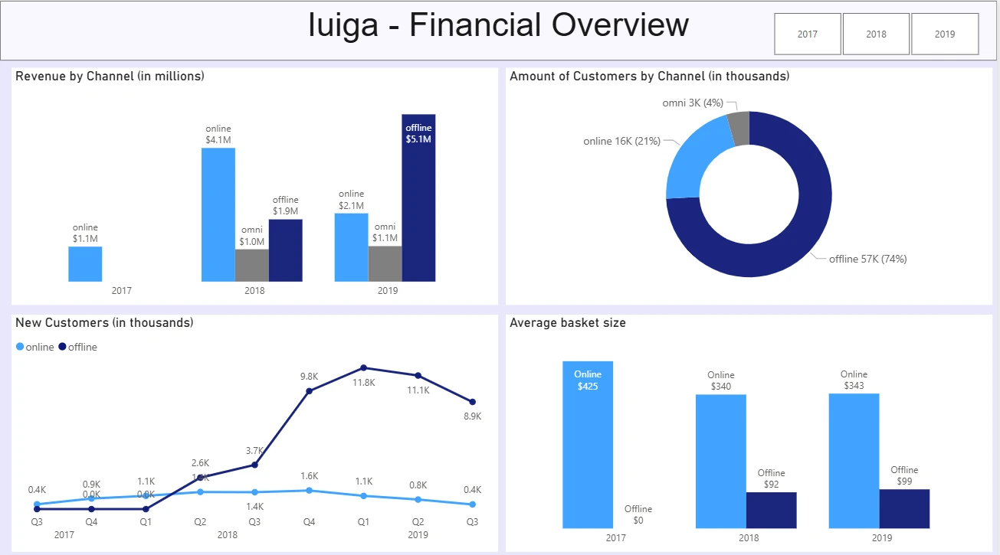

IUIGA Financial Overview
A one-page Power BI dashboard for a real company case, comparing IUIGA's online, offline and omnichannel sales from mid-2017 to August 2019, and the board presentation our team of four built around it.

- Year and context
- 2026, Management reporting course, Haaga-Helia
- My role
- Built the dashboard in a team of four
- Tools
- Power BI Desktop, PowerPoint
- Output
- One-page dashboard and a 12-slide board presentation with backup slides
The brief
In the Management reporting course, our team analysed the real company case IUIGA and presented the results to a simulated management board. The course set clear rules for formatting presentations and dashboards for executives; both had to follow them.
The question behind the work: after opening pop-up and retail stores next to its online shop, how should IUIGA steer its sales channels, and what should the board approve for the first quarter of 2020?
What the dashboard shows
One page, four visuals and a year slicer, built on four tables of case data. In the presentation it is the tool for a monthly channel review. Figures below are read from the dashboard; 2019 covers January to August only.
- Revenue by channel
- Offline revenue reached $5.1M in January–August 2019, against $1.9M in the whole of 2018. Online revenue was $4.1M in 2018 and $2.1M in the first eight months of 2019. Omnichannel stayed at about $1M.
- Customers by channel
- Offline customers are the clear majority: 57K (74%), against 16K online (21%) and 3K omnichannel (4%).
- New customers by quarter
- New offline customers rose sharply from 2018, peaking at 11.8K in Q1 2019; new online customers stayed between 0.4K and 1.6K a quarter.
- Average basket size
- Online baskets are far larger: $340–$425 against $92–$99 offline.
Designed for a board
- One colour per channel on every visual: light blue online, navy offline, grey omnichannel.
- Units in the titles (in millions, in thousands) and data labels on the marks, so no axis reading is needed.
- A single year slicer at the top filters the whole page.
- Four equal panels in a grid, one question each, under a plain title.
The slides follow the same rules: every title states the conclusion, the channel colours match the dashboard, each analysis ends with concrete next steps, and the last slide asks the board for a decision.
What we recommended
Our message to the board: going physical paid off, and now the channels have to be steered together. The main findings behind it, from the presentation:
- Offline's share of revenue rose from 31% in 2018 to 66% in 2019, without cannibalising online sales.
- Physical stores bring in most new customers: 93% of new customers in 2019.
- Retention is weak: 62% of customers (42,827 of 69,059) bought only once.
- The channels complement each other: online baskets average $350, offline $97.
For the first quarter of 2020 we asked the board to start with low-risk retention measures (bounce-back coupons and post-purchase emails within ten days of a purchase), then rebalance the marketing, store and retention budgets, test new locations as pop-ups first, and review the channels every month with the Power BI dashboard.